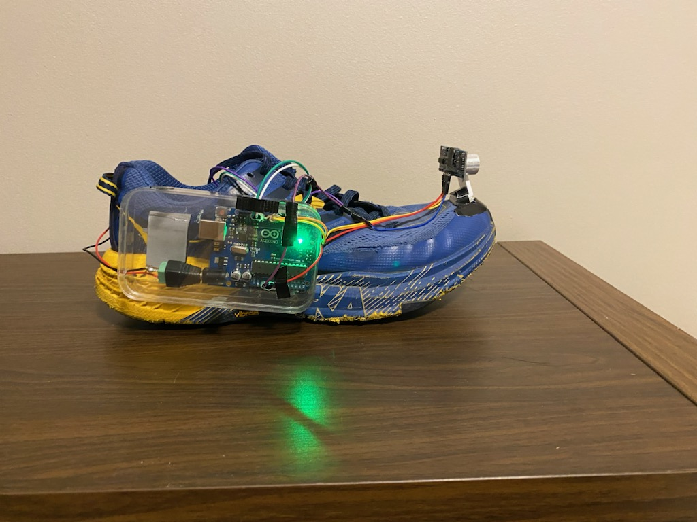

I built this project after seeing how difficult it could be for a visually impaired friend to navigate busy spaces with bikes, scooters, and heavy foot traffic. The goal was to create a wearable system that could give an extra layer of awareness by detecting nearby obstacles and turning that information into vibration feedback.
I was inspired to work on this project by a close friend of mine who is visually impaired. Walking with him around campus, I saw that while a walking stick was useful, it was not always enough in busy areas with bicycles, scooters, and a lot of foot traffic. That made me want to build something simple that could provide another layer of awareness and safety.
The smart shoe prototype used an Arduino connected to an HC-SR04 ultrasonic sensor and a vibration module. The sensor measured the distance to obstacles in front of the user, and the vibration motor translated that distance into tactile feedback.
As the user got closer to an obstacle, the system increased the vibration intensity so the feedback felt more intuitive. The final goal was not just to detect objects, but to make the warning easier to interpret while walking in a real environment.

During testing, I noticed that the distance readings were not always stable. There were occasional spikes and sudden jumps, and that made the vibration feedback unreliable. To improve the behavior, I smoothed the sensor data using a rolling average over 50 samples and rejected readings that were too far away from the average.
Once the distance signal became more stable, I used the filtered value instead of the raw reading to drive the vibration motor. I also found that constant vibration was not easy to interpret, so I switched to short vibration bursts. That made the feedback much clearer and easier to follow.
#define TRIG_PIN 9
#define ECHO_PIN 8
#define BUZ_PIN 11
const int numReadings = 50;
float readings[numReadings];
int readIndex = 0;
bool bufferFilled = false;
float distMin = 15;
float distMax = 130;
float outlierThresh = 20;
int pwmMin = 50;
int pwmMax = 255;
float rollingAvg(float newVal) {
readings[readIndex] = newVal;
readIndex = (readIndex + 1) % numReadings;
if (readIndex == 0) bufferFilled = true;
float sum = 0;
int n = bufferFilled ? numReadings : readIndex;
if (n == 0) return newVal;
for (int i = 0; i < n; i++) {
sum += readings[i];
}
return sum / n;
}
void setup() {
pinMode(BUZ_PIN, OUTPUT);
pinMode(TRIG_PIN, OUTPUT);
pinMode(ECHO_PIN, INPUT);
Serial.begin(9600);
}
void loop() {
digitalWrite(TRIG_PIN, LOW);
delayMicroseconds(2);
digitalWrite(TRIG_PIN, HIGH);
delayMicroseconds(10);
digitalWrite(TRIG_PIN, LOW);
unsigned long duration = pulseIn(ECHO_PIN, HIGH, 30000);
float distance = (duration > 0) ? duration / 58.2 : distMax + 1;
float avg = rollingAvg(distance);
Serial.println(distance);
if (abs(distance - avg) > outlierThresh) {
analogWrite(BUZ_PIN, 0);
delay(20);
return;
}
if (avg >= distMin && avg <= distMax) {
int pwm = map((int)avg, (int)distMin, (int)distMax, pwmMax, pwmMin);
pwm = constrain(pwm, pwmMin, pwmMax);
for (int i = 0; i < 5; i++) {
analogWrite(BUZ_PIN, pwm);
delay(80);
analogWrite(BUZ_PIN, 0);
delay(120);
}
} else {
analogWrite(BUZ_PIN, 0);
}
delay(20);
}